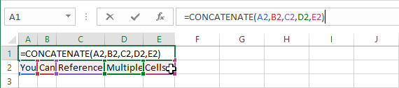
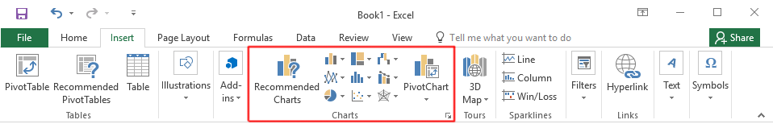

In this lab you will learn the basics of using a computer spreadsheet program, specifically Microsoft Excel. You will learn:
how to layout and format a spreadsheet
when and how to use relative or absolute references
how to get the software to do calculations for you
how to generate charts to visualize your data
Task 1: Powers of 2, Powers of 10
Introduction
Computer memory is measured in bytes, which is the amount of memory
historically used to store a single character. Because computers use a
binary number system (with only two digits: 1 and 0),
larger amounts of memory are often measured internally by power-of-2 multiples
of bytes. For example, the NTFS
filesystem usually stores data in chunks of
4 "kilobytes" (4 × 210 bytes), and modern
RAM modules
are usually measured in multiples of 230 ("giga") bytes.
On the other hand, people usually measure things in the real world using
SI prefixes,
which are based on powers of 10. For example, we measure distance using
kilometers (103 meters) and power using gigawatts (109
watts).
Confusingly, the prefix system for powers of 2 used in
computing uses the same names as those in SI, even though they refer
to slightly different numbers! As you can see in the figure below, the
base-2 and base-10 prefixes are fairly close approximations of one another,
but they diverge more and more as the prefixes get larger.
Prefix
Computing
SI
Ratio
power
amount
power
amount
kilo
210
1024
103
1000
1.024
mega
220
1048576
106
1000000
1.049
giga
230
1073741824
109
1000000000
1.074
Comparison of prefixes in computing and SI
If that weren't confusing enough, CPU speeds and hard-drive sizes are
usually measured and marketed using SI prefixes, while other computer
components continue to be marketed using base-2 prefixes!
In this task, you will be using Excel to compute powers of 2 and 10 up
to the 40th prefix value and create a graph of their divergence.
Create a new spreadsheet in Excel, then save it as ImportingData_Firstname_Lastname
Fill column A with the numbers 0 to 40.
Using the Fill Handle
Selected cells will have a small box in the bottom-right corner of the selection area. If you click and drag this into adjacent cells, Excel will intelligently generate data based on the selected content into the new cells.
For example, if the selected cells contain the first few numbers of a simple pattern (such as three cells with 0, 1, and 2), Excel will generate more numbers that follow the sequence.
If the selected cell contains a formula, that formula will be filled into the new cells, and any relative references will be automatically updated (more on references below).
Insert a formula into the first row of column B that computes 2 raised to the power of 10 times the adjacent value in column A (210A), then fill it down to the remaining 39 rows.
References

To use the value of a cell inside another cells formula, you must use a reference. To create one, type the cell's index into the formula (ex: A1), or just click on the cell to automatically insert it.
By default, this will be a relative reference. This means that when filling this formula down into other cells using the fill handle, the references will automatically change themselves relative to each cell being filled. For example, if a formula in cell A1 is referencing cell C1, filling that formula down the column will update each cell's reference to target the cell in its own row, A2 will reference C2, and A3 will reference C3.
If this behaviour is undesired, an absolute reference is required. In the previous example, if the reference in the formula was changed to C$1, each newly filled cell (A2,A3,etc) will still reference cell C1. The $ symbol before the row index tells Excel to always reference a cell in row 1. It can also be added before the column index ($C1) to only reference that column, or added to both ($C$1) to only ever reference that specific cell.
The formulas =C2, =H$2, =$M$2 were applied to each of the blue cells, then filled to the grey cells. Take note that the first two examples are still able to reference the negative columns, whereas the third always references M2.
Insert a formula in column C that computes 10 raised to a power of 3 times the value in column A (103A).
Insert a formula in column D that computes the ratio of each value in column B to the value in column C (210A:103A).
Create a bar chart that shows the growth of the ratio (column D) as column A increases.
Generating Charts

Select the data you wish to generate a into a chart. Column headings can be selected too, and Excel will automatically add them as labels to the chart. Hold the control key (or the Command key on Mac) while clicking to make multiple selections.
Pick a chart type in the Charts section of the Insert ribbon. Clicking Recommended Charts will open a window with a list of charts Excel thinks will be useful, as well as a tab to view all possible charts.
After the chart has been generated, you can double-click elements to modify them.
Rename this sheet Power2Worksheets
Each Excel file, known as a Workbook, can contain multiple Worksheets. A worksheet is simply an organization tool for separating your data into different sections. Worksheets are accessed using the tabs at the very bottom of the Excel window. Click the plus button to create a new sheet, and right-click the sheet's name to rename or delete it.
Your task is to import daily climate data collected by a Victoria weather station for the years 2016 and 1973, then create a chart that clearly compares the two years.
In the date field (shown in the figure above), set the year to 1973 and click Go (you can ignore the month field).
Download CSV files of the years 1973 and 2016. To do this, first set the year in the date field (you can ignore the month) and click Go to load that year's climate data. Then make sure CSV is selected in the download area and click Download DataWhat is CSV?
CSV
is a plain-text
format for storing tabular data. Each row of the table is stored
on a single line in the file, and each column within a row is
delimited using commas. Because of this file type's simple structure,
individual cells may not contain multiple lines of text and may not
contain commas.
2.2: Preparing data
The two datasets you downloaded contain a lot of unneeded information. They will need some cleanup to be made usable and easily comparable.
Open each csv file in a Excel and delete the first 25 rows of header information in both of them. A quick way to do this is to click and drag along the row label numbers on the left, then click Delete in the right-click context menu.
Copy the Date/Time column (column A) from either of the datasets, then switch back to your Excel file from Task 1 and paste it into Column A of a new worksheet. Name this new worksheet Climate data
Copy/paste the Mean Temp (°C) columns (column J) from the 1973 and 2016 data sets into Columns B and C of the Climate data worksheet. Rename their headers 1973 and 2016.
Change the date format of the Date/Time column to remove the year.
Cell Formatting
Right-clicking one or more cells and selecting Format Cells opens the Format Cells window. This window contains various options for changing the look of the cell and its contents. The Number tab allows you to choose what type of data the cell contains and how it should be displayed. For example, selecting Currency will preface numbers with a $ symbol, add commas and limit decimal places.
To create custom formatting rules (which you will need here), select the Custom category. This view allows you to manually edit the number format code. Select one of the supplied codes to use it as a starting point, then modify it in the Type: field.
Confirm that your climate data looks similar to the figure above.
2.3: Charting data
Select the three columns containing your climate data and insert a line chart.
Add two Moving Average Trend Line chart elements to represent the two series. Set the Period of the two trend lines to 30. This results in a line for each year plotting the average monthly temperature.
Adding and customizing chart elements
To add elements to a chart, first select the chart, then use the Add Chart Element button in the Design ribbon. You can also use the plus icon that appears in the top-right of the selected chart, but its options are fairly limited. You can delete an element by selecting Delete in its right-click context menu.
Clicking any element in the chart will select it and bring up its options in a sidebar.
The paint bucket icon (shown to the right outlined in blue) displays options for how the element looks.
The icon with bars (shown to the right outlined in green) displays options for how the element behaves.
Use the dropdown arrow (shown to the right outlined in red) to show a list of all elements in the chart.
Change the visual formatting of the four lines on the chart to put emphasis on the monthly trend lines. In the example chart shown above, the trend lines were given a Width of 3 pts and a Dash type set to Solid. The series lines have a Transparency of 60% and a Width of 1 pt.
Adjust the Bounds of the vertical axis to better fit the data. The example chart uses a minimum of -5.0 and a maximum of 30.0
Use additional formatting options to improve the readability of the chart as you see fit. Some examples:
A descriptive title.
A y-axis title that specifies the units.
Simplify and reduce the unit labels on the x-axis.
Move the chart to a new sheet using the Move Chart button in the chart's Design ribbon. Name this new sheet Climate chart
Review
Create a new worksheet called Review and write some notes describing what new things you have learned in this lab. Also mention any steps or concepts you are still finding difficult to understand and would like to receive feedback on.
Deliverables
A single Excel document containing four worksheets: Power2, Climate data, Climate chart and Review.
Power2 worksheet:
powers of 2 from 20 to 2400, in steps of 10
powers of 10 from 100 to 10120, in steps of 3
the ratio of each "equivalent" power of 2 and 10
a chart of the ratios
Climate data worksheet:
a date column formatted to show dd/mm
two columns with temperature data for 1973 and 2016
Climate chart:
Lines plotting daily temperatures for the years 1973 and 2016
Monthly average trend lines for 1973 and 2016
Clear formatting
Here are some extra steps to consider to help your Overall Assessment
Use an Excel function to calculate the formulas in task 1.
Adjust the formatting of your chart in task 1 to improve clarity and minimize empty space.
Use fill colors, borders, and font sizes to pretty up your tables of data.
Save your .xlsx document as ImportingData_Firstname_Lastname and submit it to the dropbox on D2L.
NOTE: This assignment is to be done individually. You can
help one another with problems and questions, but in the end everyone must
do their own assignment.
Criteria
Marks
Power2 Worksheet
Data
2
Chart
1
Climate Worksheets
Data
2
Chart
3
Overall Assessment
Demonstrates a solid understanding of the material